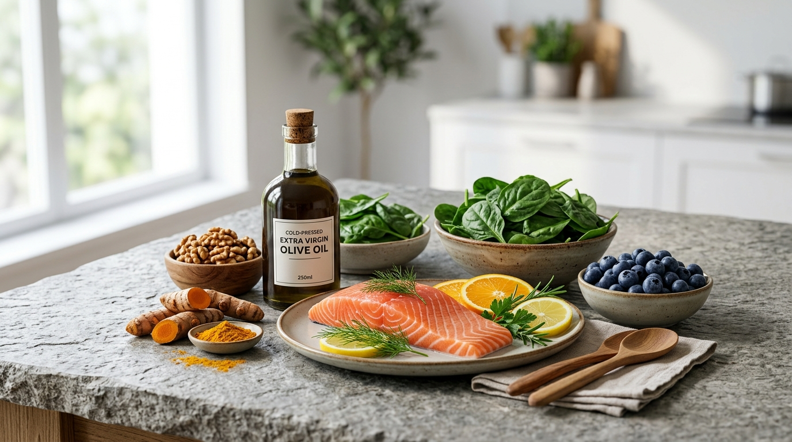

Open any social media feed today and you will find an avalanche of extreme claims: eliminate all nightshades, drink celery juice at dawn, or cut out whole food groups to "cure" autoimmune arthritis. As clinical rheumatologists, our duty is to separate high-yield biochemical realities from restrictive dietary dogmas that cause unnecessary anxiety and nutritional deficiencies.
1. The Gut-Synovium Axis: Where Diet Meets Joint Inflammation
Over 70% of the body's immune cells reside within the gut-associated lymphoid tissue (GALT). When the intestinal mucosal lining is compromised by ultra-processed foods, high-fructose corn syrup, and industrial emulsifiers, bacterial lipopolysaccharides (LPS) leak into systemic circulation. This endotoxemia stimulates toll-like receptor 4 (TLR4), amplifying TNF-alpha and Interleukin-6 production directly inside synovial joints.
2. Pillars of the Proven Mediterranean Dietary Framework
Across numerous randomized controlled trials, the traditional Mediterranean dietary pattern is the only nutritional approach consistently demonstrated to reduce disease activity scores (DAS28) and High-Sensitivity CRP in rheumatoid and psoriatic arthritis:
- Extra Virgin Olive Oil (EVOO): Contains oleocanthal, a potent natural phenolic compound that inhibits COX-1 and COX-2 enzymes in a manner biochemically analogous to ibuprofen.
- Cold-Water Fatty Fish: Salmon, sardines, mackerel, and trout provide preformed EPA and DHA. These fatty acids synthesize specialized pro-resolving mediators (resolvins and protectins) that actively switch off joint inflammation.
- Deeply Pigmented Berries: Blueberries, blackberries, and pomegranate supply anthocyanins that neutralize reactive oxygen species in synovial tissues.
- Cruciferous Vegetables: Broccoli, Brussels sprouts, and kale contain glucosinolates and sulforaphane, which downregulate inflammatory NF-kB pathways.
3. Common Myths Debunked: Nightshades & Extreme Restriction
One of the most persistent myths is that nightshade vegetables (tomatoes, bell peppers, eggplants, potatoes) exacerbate arthritis due to solanine. Rigorous clinical literature does not support a general avoidance of nightshades. In fact, tomatoes are one of nature's richest sources of lycopene, a powerful antioxidant linked to reduced cardiovascular events in lupus and RA patients.
Unless an individual has a verified allergic IgE reaction or personal trigger, arbitrarily cutting out vegetables deprives your microbiome of diverse prebiotic fiber.
4. The Real Culprits Worth Eliminating
Rather than obsessing over healthy vegetables, focus attention on the proven dietary drivers of chronic systemic inflammation:
- Sugar-sweetened beverages and high-glycemic ultra-refined carbohydrates
- Trans fats and oxidized seed oils exposed to repeated high-heat frying
- Excessive alcohol intake, which compromises intestinal barrier tight junctions and precipitates acute gout
- Processed deli meats containing advanced glycation end-products (AGEs)
About Dr. Priya Nair
Dr. Priya Nair is the Chief Medical Officer at RheumaCare Center. She integrates advanced targeted biologic therapies with evidence-based lifestyle medicine and clinical nutrition to achieve optimal autoimmune remission.